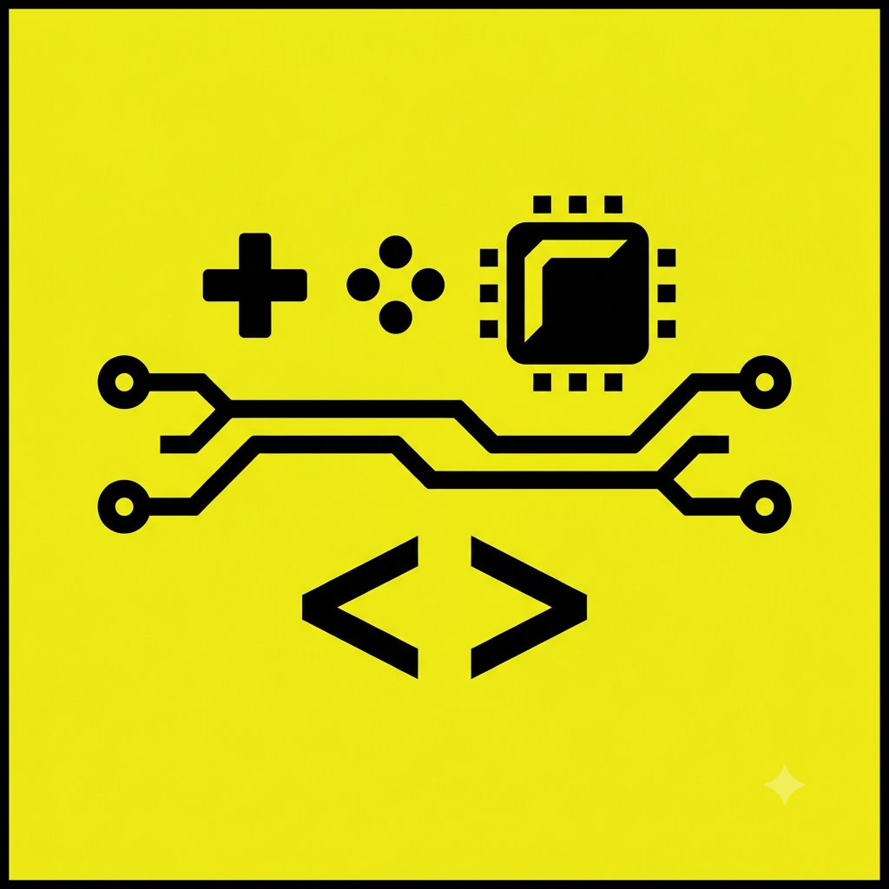

Meu primeiro post
Por: Rodrigo Mendes
Boas-vindas ao meu novo blog! Aqui vou compartilhar dicas de programação e curiosidades da área de tecnologia.
Vou compartilhar conhecimentos sobre tecnologia e programação

Por: Rodrigo Mendes
Boas-vindas ao meu novo blog! Aqui vou compartilhar dicas de programação e curiosidades da área de tecnologia.
Por: Rodrigo Mendes
Nessa postagem sobre a franquia Metroid, listando-os em cada plataforma: